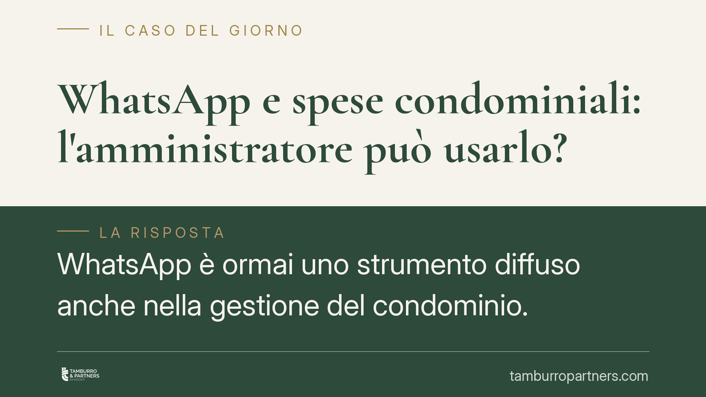
WhatsApp e spese condominiali: l'amministratore può usarlo?
WhatsApp è ormai uno strumento diffuso anche nella gestione del condominio. Ma una comunicazione via chat sulle spese condominiali ha valore giuridico? E può sostituire convocazion…
Nomi dei condòmini morosi: chi può conoscerli e quando
La domanda è ricorrente nelle assemblee: chi paga regolarmente può sapere quali condòmini sono in arretrato? La risposta è affermativa, ma entro precisi limiti. L'art. 63 disp. att…
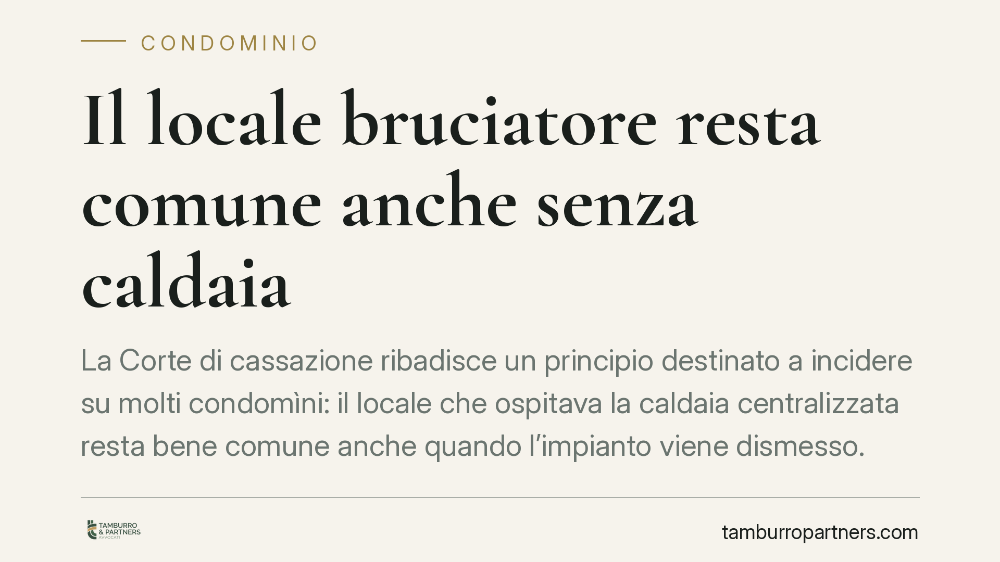
Il locale bruciatore resta comune anche senza caldaia
La Corte di cassazione ribadisce un principio destinato a incidere su molti condomìni: il locale che ospitava la caldaia centralizzata resta bene comune anche quando l'impianto vie…
Mobilità tra enti pubblici e nulla osta: regole e limiti
La mobilità volontaria consente al dipendente pubblico di passare a un altro ente tramite cessione del contratto. Il punto critico resta il nulla osta dell'amministrazione di appar…
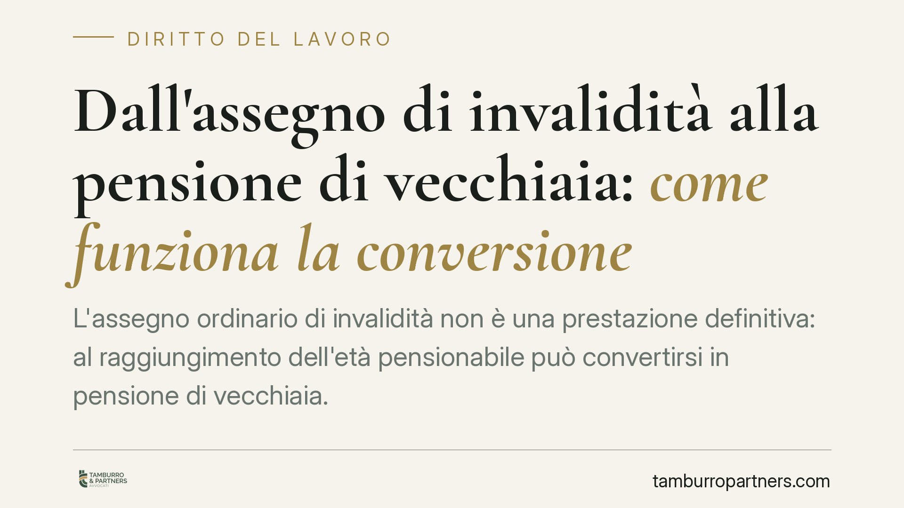
Dall'assegno di invalidità alla pensione di vecchiaia: come funziona la conversione
L'assegno ordinario di invalidità non è una prestazione definitiva: al raggiungimento dell'età pensionabile può convertirsi in pensione di vecchiaia. La prassi INPS ha richiamato i…
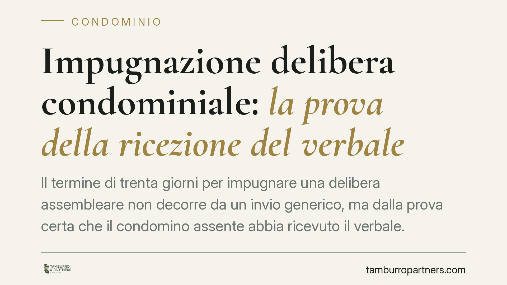
Impugnazione delibera condominiale: la prova della ricezione del verbale
Il termine di trenta giorni per impugnare una delibera assembleare non decorre da un invio generico, ma dalla prova certa che il condomino assente abbia ricevuto il verbale. Per ch…
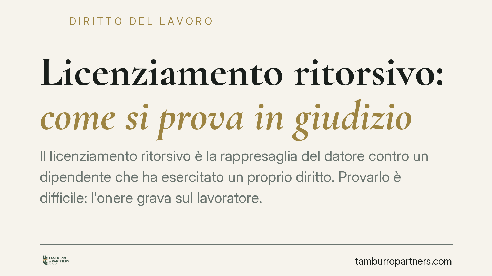
Licenziamento ritorsivo: come si prova in giudizio
Il licenziamento ritorsivo è la rappresaglia del datore contro un dipendente che ha esercitato un proprio diritto. Provarlo è difficile: l'onere grava sul lavoratore. La giurisprud…
Licenziamento collettivo in una sola sede: regole e tutele
Ridurre il personale in una sola sede non esonera dalla procedura di licenziamento collettivo. Se l'azienda supera 15 dipendenti e intende licenziare almeno cinque lavoratori in 12…
TFR e silenzio-assenso: come funziona davvero la destinazione alla previdenza complementare
Periodicamente si riaffaccia il tema della destinazione automatica del TFR ai fondi pensione. Circolano anche notizie di una riforma che imporrebbe il conferimento generalizzato da…
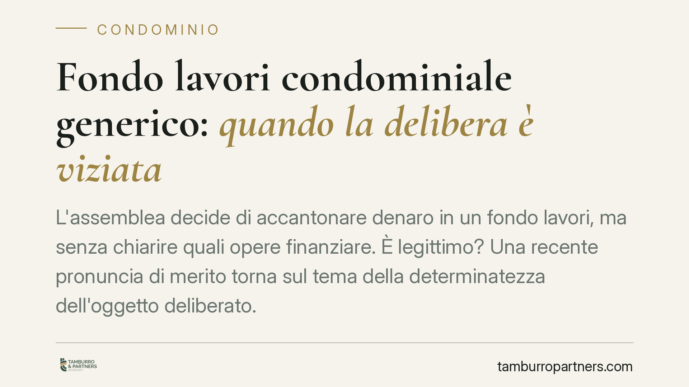
Fondo lavori condominiale generico: quando la delibera è viziata
L'assemblea decide di accantonare denaro in un fondo lavori, ma senza chiarire quali opere finanziare. È legittimo? Una recente pronuncia di merito torna sul tema della determinate…
Madri lavoratrici e assegno di invalidità: il beneficio del comma 40
Le lavoratrici madri inquadrate nel sistema contributivo puro possono ottenere un trattamento previdenziale più favorevole grazie al beneficio per figli del comma 40 della Legge 33…
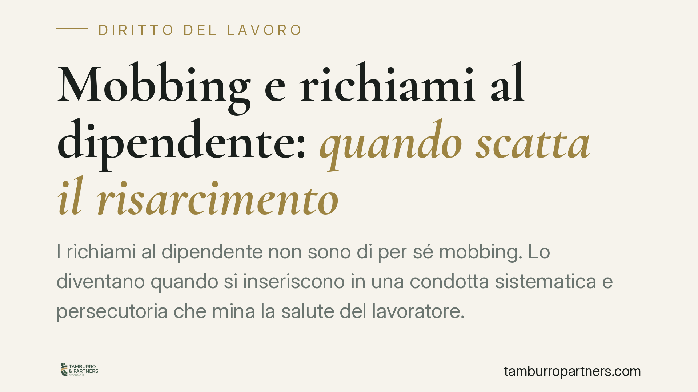
Mobbing e richiami al dipendente: quando scatta il risarcimento
La Sezione Lavoro della Cassazione, con un orientamento ormai consolidato, ribadisce che il mobbing richiede una pluralità di condotte sistematiche e un disegno persecutorio, non u…
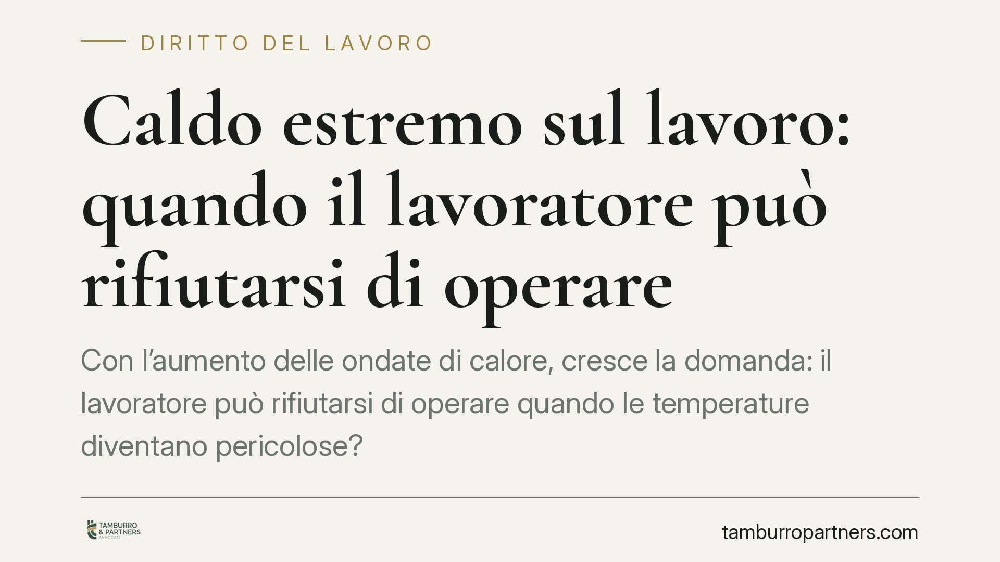
Caldo estremo sul lavoro: quando il lavoratore può rifiutarsi di operare
Con l'aumento delle ondate di calore, cresce la domanda: il lavoratore può rifiutarsi di operare quando le temperature diventano pericolose? La risposta non è un sì automatico, ma …
Recuperare i soldi prestati all'ex: il valore probatorio dei messaggi WhatsApp
I messaggi scambiati su WhatsApp possono concorrere a provare un prestito di denaro tra ex partner, ma da soli raramente bastano. La distinzione tra prestito restituibile e regalo …
L'avvocato può pagarsi per primo con i soldi del cliente?
Chi riceve denaro da un cliente per uno scopo preciso non può usarlo per saldare il proprio compenso prima di destinarlo a quella finalità. La Cassazione lo ribadisce richiamando g…
Infiltrazioni dal terrazzo: chi paga il danno?
Le infiltrazioni che partono da un terrazzo di proprietà esclusiva ma a copertura dell'edificio non gravano su un solo soggetto. La giurisprudenza conferma una ripartizione del dan…
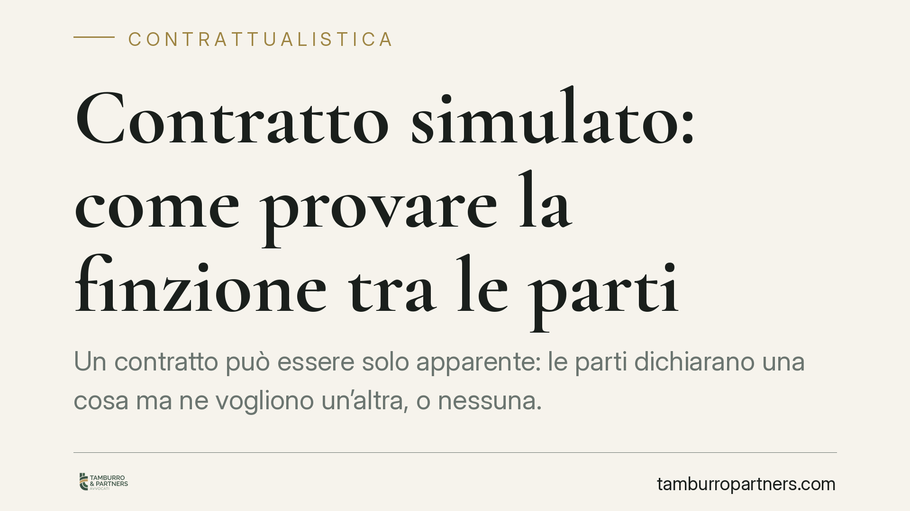
Contratto simulato: come provare la finzione tra le parti
Un contratto può essere solo apparente: le parti dichiarano una cosa ma ne vogliono un'altra, o nessuna. Una recente pronuncia del Tribunale di Latina ricorda che, tra i contraenti…
L'amministratore non mostra i documenti: si può chiedere la revoca?
Il condòmino ha diritto di consultare la documentazione contabile e di estrarne copia. Quando l'amministratore oppone resistenze ingiustificate, la condotta può integrare una grave…
Caduta in una buca sul marciapiede: chi paga il risarcimento
Cadere a causa di una buca o di una pavimentazione dissestata genera un danno risarcibile. La responsabilità ricade su chi ha la custodia del marciapiede – Comune o condominio – se…
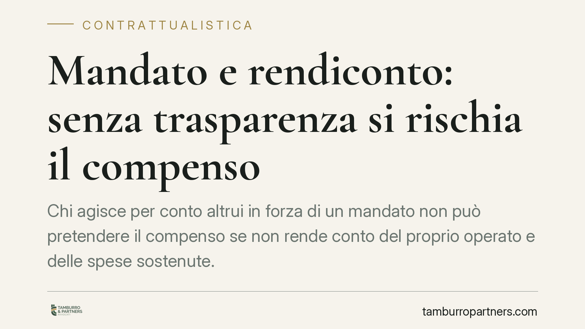
Mandato e rendiconto: senza trasparenza si rischia il compenso
Chi agisce per conto altrui in forza di un mandato non può pretendere il compenso se non rende conto del proprio operato e delle spese sostenute. Gli obblighi di informazione e ren…
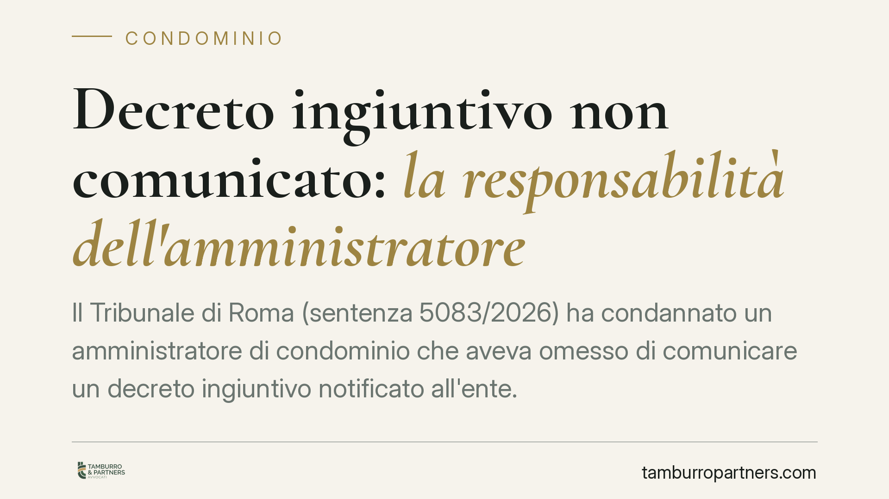
Decreto ingiuntivo non comunicato: la responsabilità dell'amministratore
Il Tribunale di Roma (sentenza 5083/2026) ha condannato un amministratore di condominio che aveva omesso di comunicare un decreto ingiuntivo notificato all'ente. La mancata informa…

Salario giusto e contrasto al caporalato digitale: cosa monitorare
Il dibattito sul cosiddetto "salario giusto" e sul contrasto al caporalato digitale è tornato al centro delle iniziative legislative in materia di lavoro. Prima di adeguare contrat…

Infortunio sul lavoro: l'appaltatore risponde se fornisce attrezzature inadeguate
Chi fornisce le attrezzature, in cantiere come in azienda, può rispondere dell'infortunio anche in assenza di un rapporto di lavoro subordinato formale. Una recente linea della Cas…

Danni da inadempimento al passivo senza risoluzione del contratto
Una recente ordinanza della Corte di Cassazione torna su un punto controverso: il credito risarcitorio da inadempimento contrattuale può essere ammesso al passivo di una procedura …

Dividere un condominio in due edifici separati: quando è possibile
Un condominio può essere diviso in due edifici autonomi quando le parti hanno indipendenza strutturale. La legge lo consente con regole precise su maggioranze e parti comuni. Capir…

Trasferire il contributo aziendale a un altro fondo pensione: cosa sapere
Spostare la propria posizione previdenziale da un fondo negoziale a un fondo aperto o a un PIP è possibile, ma il trasferimento del contributo versato dal datore di lavoro segue re…

Assemblea di condominio senza segretario: la delibera è annullabile?
Capita che un'assemblea si tenga senza nominare un segretario verbalizzante. La questione non è formale: il verbale documenta la volontà assembleare e ne consente il controllo. La …

Obbligo di salvataggio assicurativo: chi prova l'inadempimento
Nei contratti assicurativi l'assicurato deve attivarsi per limitare il danno. Ma quando l'assicuratore contesta la violazione di questo dovere, su chi grava la prova? La giurisprud…

Revoca dell'amministratore che non presenta il bilancio condominiale
L'amministratore che non rende il conto della gestione viola un obbligo preciso. Il Codice civile fissa un termine di 180 giorni per il rendiconto e individua nella mancata present…

Fondi pensione e ritiro del capitale: cosa cambia con le ipotesi della Legge di Bilancio 2026
Si discute di nuove modalità per ritirare il capitale accumulato nei fondi pensione: rendite a durata definita, prelievi flessibili ed erogazioni frazionate sarebbero allo studio n…